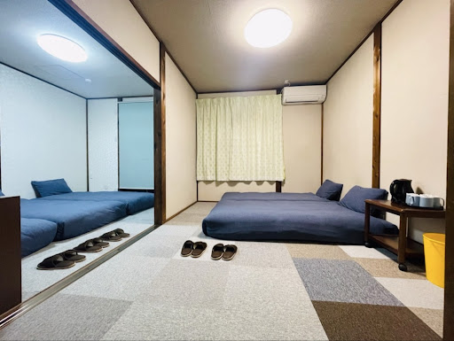

設備詳細
Facilities
DETAILS
リビング・ダイニングLiving & Dining
木の温もりを感じる広々とした空間。大人数でもゆったりと囲める大きなダイニングテーブルと、くつろげる背もたれつきの椅子を完備しています。
A spacious area where you can feel the warmth of wood. It features a large dining table for groups and cozy seats.
.jpg)
.jpg)
.jpg)
.jpg)
- テーブルTable大型木製テーブルLarge Wooden Table
- 座席Seats椅子・ベンチシートChairs & Bench Seats
- 冷暖房A/Cエアコン完備Full Air Conditioning
- Wi-FiWi-Fi高速無線LAN無料High-speed Free Wi-Fi
キッチン・調理器具Kitchen & Cookware
2口IHコンロ、大型冷蔵庫、豊富な調理器具を取り揃えたキッチン。ご家族や友人と自炊を楽しめます。
A full kitchen with a 2-burner IH stovetop, large fridge, and various utensils. Enjoy cooking with family and friends.
.jpg)
.jpg)
.jpg)
.jpg)
- コンロStove3口IHクッキングヒーター3-burner IH Heater
- 家電Appliances大型冷蔵庫, レンジ, 炊飯器, ケトルFridge, Microwave, Rice Cooker, Kettle
- 調理器具Utensilsフライパン, 鍋, 包丁, まな板Pans, Pots, Knives, Cutting Board
- カトラリーCutlery箸, スプーン, フォーク, 栓抜きChopsticks, Spoons, Forks, Opener
ベッドルーム（寝室）Bedrooms
快適なシングルベッドを計6台設置。清潔なリネンで、旅の疲れを癒してください。
Comfortable bet rooms equipped with a total of 6 single beds. Relax with our clean, high-quality linens.

.jpg)
.jpg)
.jpg)
- ベッド数Bedsシングルベッド × 6台6 Single Beds
- 寝具Bedding羽毛布団, 清潔なシーツ一式Duvets, Clean Sheets Set
バス・トイレ・ランドリーBath, Toilet & Laundry
清潔感のあるバスルームと洗面スペース。洗濯機も完備しているため、長期滞在やお子様連れの旅行でも安心です。
Clean bathroom and vanity space. Equipped with a washing machine, perfect for long-term stays and families.
.jpg)
.jpg)
.jpg)
.jpg)
- バスBathバスタブ, シャワー, 洗面器Bathtub, Shower, Washbasin
- トイレToilet温水洗浄便座（ウォシュレット）Bidet Toilet (Washlet)
- 洗濯Laundry全自動洗濯機（無料）Washing Machine (Free)
- 消耗品Amenitiesシャンプー, リンス, ボディソープShampoo, Conditioner, Body Soap